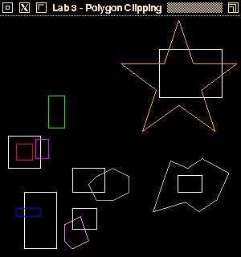
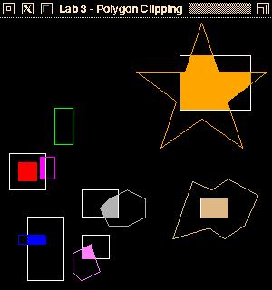

In this course, you will implement some of the 2D drawing routines we have been discussing in class. This will help improve your understanding of these algorithms.
This assignment involves polygon clipping. You will implement the Sutherland-Hodgman Polygon Clipper discussed in class. You have the option of doing this assignment in C, C++, or Python.
As with the previous assignments, the programming environment that you will use for this assignment is a set of simple modules with implementations in C, C++, Python and Java. You are free to use any of the implementations. The modules include:
In addition, the following auxillary classes / files are included for the C/C++ versions:
Buffers - a support module providing OpenGL vertex and element buffer support.
ShaderSetup - a support module that handles shader program compilation and linking.
Vertex - a module that describes the structure of a vertex.
shader.vert, shader.frag - simple GLSL 1.50 shaders.
alt.vert, alt.frag - simple GLSL 1.20 shaders.
Finally, The C version includes a module named FloatVector which provides an extensible vector holding floating-point values. Both the C and C++ versions include a file named header.mak for use with the gmakemake program on our systems to create a Makefile to simplify compilation and linking of the program
See the Supplied Files section (below) for details on how to download the framework
The only module that you will need to modify is the clipper module. For this assignment, you will need to complete the method clipPolygon(), implementing the Sutherland-Hodgman Polygon Clipper algorithm. The prototype for this method is slightly different in Python compared to the C and C++ versions; for C and C++, it looks like this:
whereas in Python, the signature looks like:
In both cases, in is the number of vertices in the polygon to be clipped, an array of input verticies (inx, iny for Python, inV for C/C++) holding the coordinates of the polygon vertices before clipping are passed in and arrays of output vertices (outx, outy for Python, outV for C/C++) that will hold the coordinates of the polygon vertices after clipping. The coordinates of lower left (llx, lly for Python, ll for C/C++) and upper-right (urx, ury for Python and ur for C/C++) corners of the clipping rectangle are also passed into the function. The function should return the count of vertices after clipping (i.e., the number of entries in output arrays which contain valid data).
You are free to add additional data members and methods to the clipper module as you see fit; however, you cannot modify any of the other modules.
Here are an image that will be produced by the clipTest / clipMain program with the
original clipper module found in the framework, and the image produced when clipper contains a working Sutherland Hodgman Polygon Clipper implementation:
 
Within these images, outlines in white show the clipping regions; outlines in other colors are the outlines of the original polygons before clipping. Solid-color areas are the polygons that result from clipping against the clipping regions.
In the clipTest / clipMain driver program provided with the framework, the red polygon is entirely inside its clipping region; the blue and magenta polygons each have portions outside their clipping regions on a single side; and the grey and pink polygons have portions outside their clipping regions on multiple sides. The green polygon is being clipped against the upper-left square clipping region; because it is entirely outside of that region, all of its vertices are eliminated by the clipping process. The orange polygon has one or more vertices outside with respect to each edge of its clipping region, and the light brown polygon completely encloses its clipping region.
The programming framework for this assignment is available as a ZIP archive which can be found in the CONTENT->Assignment Material section of mycourses and can be accessed by clicking here.
The ZIP archive contains a folder named lab3; under that are subfolders c, c++, and python, which contain the obvious things. In the C and C++ folders you'll find a file named header.mak, for use on the CS systems to help you generate a Makefile that will compile and link your program with the libraries used by the framework. See the contents of header.mak for details on how to do this. In the misc folder you'll find the compmac compilation script for Macs.
Your routines will be tested with a set of driver programs; some of them may be different from the driver found in the framework archive. Submit only your modified clipper module and any other supporting code you write - do not submit the driver program or other source code from the framework. If you have additional supporting code (e.g., data structures or methods), you may either put them in the clipper source files or submit them as additional source files.
If you are working in C++, your implementation must be in a file named clipper.cpp. If your implementation requires making changes to the clipper.h file (e.g., you have added data members or member functions to the class declaration), you should submit that file along with clipper.cpp. If you make changes to the header.mak file, you may submit your modified file as well.
Similarly, if you are working in C, your implementation must be in a file named clipper.c. Again, if your implementation requires making changes to the clipper.h file, you should submit that file along with clipper.c. If you make changes to the header.mak file, you may submit your modified file as well.
If you are working in Python, your implementation must be in a file named clipper.py. Files can be placed in the Dropbox titled Assignment 3 - clipping.
The minimum acceptance test is that your code must be complete - that is, it must compile and link cleanly when submitted. Submissions will not be accepted if they fail to compile and link cleanly. (Warning messages from the compiler are acceptable, but not fatal errors.)
Your grade will be based on your implementation of the required routine and its usability with the supplied test programs.
The lists of situations to be checked in your submission (see below) is not exhaustive; the tests run during grading may include other combinations. You may want to modify the test program you are given to cover a wide range of input situations.
Java applets are available online to help you visualize polygon clipping.
You are guaranteed that the dimensions of the drawing window will be 300x300 pixels.
Recall that the SHPC algorithm discussed in class clips the incoming vertex list against one side of the clipping region. To clip against the entire region, you'll need to apply the SHPC algorithm four times (once per edge of the region) with the output vertex list from each application being fed as the input vertex list to the next application.
You are guaranteed that there will be in vertices in the inx, iny, or inV array, and that they are listed in order around the circumference of the polygon (that is, adjacent vertices in the arrays form one edge of the polygon, with the final edge connecting the last vertex to the first vertex); however, the list may be in either clockwise or counter-clockwise order. (The test program(s) used during grading will make the same assumptions about the vertex count returned from clipPolygon(), and the sequencing of the vertices outx, outy or outV[] array.)
It is common knowledge that code for the Sutherland-Hodgman algorithm is freely available on the Internet and in textbooks. You are free to use these references as a guide, but please do not simply cut and paste code from any of these sources.
Refer back to the Assignment 0 - Hello OpenGL (C/C++ version) programming assignment for information about obtaining and installing the GLFW and/or GLEW libraries (for C/C++) and to Assignment 1 - Line Drawing for info on setting up your Python environment.
Do not make any changes to the function prototypes. This means that your implementations must match the prototypes exactly in terms of number, types, and order of parameters. The reason for this is that the test programs assume that your implementations match those prototypes; if you make changes, there will be compilation errors, and even if the test programs link, they almost certainly won't execute correctly (which means you'll lose substantial amounts of credit for incorrect program pe rformance).